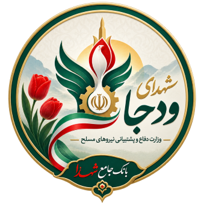

مرکز توسعه خدمات خانواده شهدا و ایثارگران ودجا
یک مرکز اجرایی، خدماتی و توسعهای با محیط فیزیکی مستقل، ساختار عملیاتی مستقل و مجموعهای از خدمات، شبکهها، پروژهها و زیرساختهای دیجیتال.
اتصال به ودجا در سطح سیاست و راهبری کلان؛ استقلال در اجرا و توسعه
۱. تعریف مرکز
مرکز توسعه خدمات خانواده شهدا و ایثارگران ودجا یک مرکز واقعی و چندلایه برای طراحی، مدیریت، ارائه و توسعه خدمات خانواده شهدا و ایثارگران است؛ نه یک وبسایت و نه یک سامانه منفرد.
مرکز دارای محیط فیزیکی، مدیریت، کارکنان، فرآیندهای اجرایی، خدمات حضوری، شبکه خادمین، پروژههای تخصصی و مجموعهای از سامانهها و زیرساختهای مجازی است. فناوری در این مدل ابزار توسعه و پشتیبانی مرکز است.
۲. جایگاه مرکز نسبت به ودجا
مرکز در چارچوب این طرح ذیل اداره امور شهدا و ایثارگران ودجا تعریف میشود و با بدنه ودجا ارتباط و اتصال کاری دارد؛ اما برای اداره و توسعه خود، ساختار اجرایی مستقلی خواهد داشت.
| موضوع | جایگاه |
|---|---|
| جایگاه کلان | ذیل اداره امور شهدا و ایثارگران ودجا |
| سیاست و جهتگیری | هماهنگ با سیاستها و الزامات کلان ودجا |
| مدیریت روزمره | مستقل و دارای ساختار اجرایی مشخص |
| توسعه خدمات و پروژهها | قابل طراحی و توسعه مستقل در چارچوب توافق و سیاست کلان |
| زیرساختها | مرکز فیزیکی + شبکه انسانی + سامانهها و خدمات دیجیتال |
۳. مدل استقلال مرکز
استقلال اجرایی
مرکز تیم، مدیر، فرآیند و عملیات خود را دارد.
استقلال توسعهای
خدمات، پروژهها، شبکهها و سامانههای موردنیاز را توسعه میدهد.
همسویی سازمانی
فعالیتها با سیاستها، الزامات و نیازهای ودجا هماهنگ میشوند.
عدم ادعای واحد تشکیلاتی
مرکز در طرح بهعنوان یک واحد اداری داخلی ودجا تعریف نمیشود؛ بلکه یک مرکز اجرایی متصل به آن است.
۴. مرکز فیزیکی؛ قلب عملیاتی طرح
مرکز دارای یک محیط فیزیکی مناسب، بزرگ و چندمنظوره است تا بخش مهمی از فعالیتهای اداری، پشتیبانی، مدیریتی و خدماتی در آن انجام شود.
پذیرش و راهنمایی
استقبال، شناخت نیاز و هدایت مراجعهکننده.
امور اداری
ثبت، پیگیری، هماهنگی و امور اجرایی.
مدیریت و راهبری
اتاقهای مدیریت، جلسات و تصمیمگیری.
پشتیبانی
واحدهای عملیاتی و خدمات پشت صحنه.
مشاوره و پاسخگویی
فضاهای خصوصی برای خدمات تخصصی.
آموزش و کارگاه
دوره، جلسه، آموزش و توانمندسازی.
فرهنگ و رویداد
نشست، نمایشگاه، برنامه فرهنگی و اجتماعی.
فضای خادمین
سازماندهی، آموزش و هماهنگی شبکه خادمین.
تعامل با خانواده
فضای مناسب گفتوگو، دریافت درخواست و پیگیری.
۵. ساختار اجرایی مرکز
ساختار مرکز باید بر اساس «وظیفه و خدمت» شکل بگیرد، نه صرفاً بر اساس واحدهای اداری.
مدیریت مرکز
راهبری اجرایی، برنامهریزی و هماهنگی کلان.
مرکز عملیات
ارائه، ارجاع و پیگیری خدمات.
مرکز توسعه خدمات
طراحی خدمات جدید و بهبود خدمات موجود.
امور خانواده
ارتباط، نیازسنجی و پشتیبانی خانوادهها.
شبکه و خادمین
مدیریت شبکه انسانی و مشارکتها.
فناوری و داده
سامانهها، داده، زیرساخت و هوشمندسازی.
۶. سبد خدمات مرکز
خدمات اداری و پشتیبانی
راهنمایی، هماهنگی، پیگیری و پشتیبانی امور.
خدمات خانواده
خدمات اجتماعی، خانوادگی و حمایتی.
آموزش و تحصیل
آموزش، مشاوره، دوره و فرصتهای یادگیری.
اشتغال و کارآفرینی
مهارت، فرصت شغلی، کسبوکار و شبکهسازی.
فرهنگی و اجتماعی
رویداد، برنامه فرهنگی، ارتباطات و مشارکت.
رفاهی و توانمندسازی
امکانات، مزایا، برنامههای رفاهی و توسعه فردی.
۷. خانواده؛ محور طراحی خدمات
مرکز باید خانواده را بهعنوان یک واحد واقعی خدمت ببیند. اطلاعات و خدمات اعضای خانواده، در حدود دسترسی و الزامات مربوط، به هم متصل میشوند تا مسیر خدمت منسجم باشد.
شناخت خانواده
ساختار اعضا و اطلاعات موردنیاز خدمت.
نیازسنجی
شناخت نیازهای اعلامشده و اولویتها.
مسیر خدمت
تبدیل نیاز به خدمت، ارجاع و پیگیری.
سوابق
ثبت خدمات و درخواستهای قابل نگهداری.
توانمندسازی
آموزش، اشتغال و فرصتهای رشد.
بازخورد
رضایت، پیشنهاد و ارزیابی کیفیت.
۸. شبکه خادمین شهدا
شبکه خادمین شهدا یکی از پروژههای اصلی مرکز است و نباید صرفاً به یک سامانه ثبتنام تقلیل پیدا کند. هدف، ایجاد یک شبکه واقعی انسانی و اجرایی برای مشارکت در برنامهها و خدمات است.
شناسایی و عضویت
ثبت مشخصات، تخصص و حوزه علاقه.
سازماندهی
گروهها، مناطق، تخصصها و مأموریتها.
آموزش
دورهها و توانمندسازی خادمین.
مأموریت و پروژه
اتصال افراد به فعالیتهای مشخص.
گزارش فعالیت
ثبت عملکرد و نتایج مشارکت.
شبکه ارتباطی
ارتباط مستمر با مرکز و سایر خادمین.
۹. بانک شهدای وزارت دفاع
یکی از زیرساختهای تخصصی مرکز، بانک شهدای وزارت دفاع است؛ یک پایگاه هویتی، تاریخی و دانشی که اطلاعات شهدا، اسناد، آثار، روایتها، سوابق و ارتباطات مرتبط را با منشأ و سطح اعتبار مشخص مدیریت میکند.
هویت شهید
نامها، شناسهها، تاریخها و اطلاعات هویتی.
سوابق سازمانی
ارتباط با محل خدمت و سوابق قابل استناد.
خانواده
ارتباط کنترلشده با پرونده خانواده.
اسناد و آثار
تصویر، سند، صوت، فیلم و آثار.
روایت و پژوهش
روایتها، منابع و پژوهشهای مرتبط.
مکان و یادمان
اطلاعات جغرافیایی و یادمانی.
۱۰. سامانههای برخط و مجازی
سامانهها ابزارهای مرکز برای گسترش خدمت خارج از فضای فیزیکی هستند. هر سامانه باید یک مأموریت روشن و جایگاه مشخص در معماری مرکز داشته باشد.
سامانه برخط پشتیبانی و تعامل
ارتباط، درخواست، پاسخگویی، پیگیری و تعامل غیرحضوری.
درگاه خدمات
معرفی خدمات، شرایط، درخواست و پیگیری.
خدمات خانواده
دسترسی خانواده به خدمات و فرصتهای مرتبط.
شبکه خادمین
مدیریت دیجیتال شبکه انسانی خادمین.
بانک شهدا
مدیریت و دسترسی کنترلشده به دادههای شهدا.
سایر سامانهها
سامانههای تخصصی بر اساس نیازهای مرکز.
۱۱. سامانهها و خدمات آموزش
آموزش یکی از محورهای مستقل مرکز است و هم به خانوادهها و هم به خادمین و شبکه اجرایی خدمات میدهد.
آموزش خانواده
مهارتهای زندگی، تحصیل، شغل و توانمندسازی.
آموزش خادمین
مهارتهای خدمت، فرهنگ، ارتباط و تخصصهای موردنیاز.
آموزش مجازی
دورههای غیرحضوری و محتوای آموزشی.
مرکز آموزش حضوری
کلاس، کارگاه و برنامههای تخصصی در مرکز.
۱۲. شبکه مراکز و شرکای خدماتی
مرکز همه خدمات را الزاماً خودش ارائه نمیکند؛ بلکه ظرفیت مراکز دیگر را شناسایی و به مسیر خدمت متصل میکند.
آموزشی
مدارس، دانشگاهها و مراکز مهارت.
سلامت و مشاوره
مراکز تخصصی و خدمات مجاز.
فرهنگی و ورزشی
مؤسسات فرهنگی و مجموعههای ورزشی.
رفاهی
اقامت، سفر، فروشگاه و خدمات رفاهی.
اشتغال
کارفرمایان، شرکتها و مراکز مهارت.
پنل شریک
مدیریت ظرفیت، ارجاع و نتیجه خدمت.
۱۳. فرآیند ارائه خدمت
هر خدمت باید مالک، فرآیند، مسئول، زمانبندی، شرایط، خروجی و روش ارزیابی داشته باشد. درخواستها باید قابل پیگیری باشند و وضعیت آنها برای واحد مسئول و خانواده روشن باشد.
۱۴. مرکز پشتیبانی و تعامل
مرکز باید یک نقطه مشخص برای پاسخگویی و تعامل داشته باشد که هم در محیط فیزیکی و هم در فضای مجازی فعال باشد.
پاسخگویی
دریافت سؤال و درخواست.
راهنمایی
تشخیص مسیر مناسب خدمت.
ارجاع
اتصال به واحد یا مرکز مربوط.
پیگیری
کنترل وضعیت تا نتیجه.
ثبت تجربه
بازخورد و رضایت خانواده.
تحلیل
کشف پرسشها و مشکلات پرتکرار.
۱۵. فرهنگ، ارتباطات و رویداد
مرکز فقط محل امور اداری نیست؛ باید بخشی از ظرفیت خود را به ارتباط فرهنگی و اجتماعی با خانوادهها و خادمین اختصاص دهد.
رویداد
نشست، برنامه، نمایشگاه و گردهمایی.
محتوا
تولید و انتشار محتوای معتبر و مستند.
تعامل خانواده
فضای ارتباط و مشارکت.
حافظه و روایت
ثبت روایتها و میراث مرتبط.
۱۶. کودک و نوجوان؛ مسیر رشد
یکی از محورهای توسعهای مرکز، ایجاد مسیر رشد برای نسل جوان خانواده است:
برنامههایی مانند فناوری، هوش مصنوعی، زبان، مهارتهای نرم، کارآفرینی، مسابقات، اردوهای علمی و مشاوره مسیر تحصیلی و شغلی میتوانند در این محور قرار گیرند.
۱۷. توانمندسازی، اشتغال و کارآفرینی
مهارتآموزی
شناسایی مهارت و مسیر ارتقا.
فرصت شغلی
اتصال به کارفرمایان و فرصتهای معتبر.
کارآفرینی
مشاوره ایده، مدل کسبوکار و شبکهسازی.
بازار خانواده
معرفی محصولات و خدمات خانوادهها.
منتورینگ
اتصال افراد به متخصصان و تجربههای مرتبط.
پایش نتیجه
اندازهگیری مسیر و نتیجه توانمندسازی.
۱۸. مرکز مدیریت و فرمان خدمات
برای اداره یک مجموعه چندلایه، مرکز به داشبورد مدیریتی و مرکز فرمان نیاز دارد.
وضعیت خدمات
تعداد، وضعیت و عملکرد خدمات.
درخواستها
ورودی، ارجاع، تأخیر و نتیجه.
خانوادهها
الگوهای نیاز و استفاده از خدمات.
شبکه
ظرفیت و عملکرد مراکز همکار.
خادمین
فعالیت و مشارکت شبکه خادمین.
تصمیمیار
گزارش و تحلیل برای تصمیمگیری مدیریتی.
۱۹. داده و هوشمندی
داده باید برای اداره بهتر مرکز استفاده شود، نه صرفاً برای نگهداری اطلاعات.
در مراحل پیشرفته میتوان از هوش مصنوعی برای جستوجو، پیشنهاد مسیر خدمت، تحلیل نیاز، کشف گلوگاه، تحلیل رضایت و کمک به مدیریت استفاده کرد؛ تصمیمهای حساس همچنان نیازمند نظارت انسانی هستند.
۲۰. امنیت و حریم خصوصی
اطلاعات خانوادهها، شهدا و پروندههای مرتبط حساس است و باید از ابتدا با معماری امنیتی مناسب مدیریت شود.
سطوح دسترسی
هر نقش فقط اطلاعات موردنیاز خود را ببیند.
ثبت رخداد
فعالیتهای حساس قابل ثبت و بررسی باشند.
تفکیک داده
داده عمومی، داخلی و حساس از هم تفکیک شوند.
رضایت و مجوز
استفاده از اطلاعات مطابق ضوابط و مجوزهای مربوط.
پشتیبانگیری
بازیابیپذیری و تداوم خدمت.
امنیت سامانه
احراز هویت، رمزنگاری و کنترل رخدادهای امنیتی.
۲۱. معماری کلان مرکز
این لایهها باید یکدیگر را پشتیبانی کنند و در عین استقلال هر بخش، معماری مشترک و قابل توسعه داشته باشند.
۲۲. مدل توسعه و پروژههای مرکز
هر ایده الزاماً نباید به یک سامانه جدید تبدیل شود. ابتدا باید مشخص شود که مسئله با خدمت، فرآیند، شبکه، داده، اتصال سامانه موجود یا محصول جدید حل میشود.
پروژههای مرکز میتوانند شامل سامانه جدید، بانک اطلاعاتی، شبکه تخصصی، خدمت جدید، مرکز آموزشی، ابزار دادهای، داشبورد مدیریتی یا برنامه اجتماعی باشند.
۲۳. اهداف و نقشه راه
مرحله اول
راهاندازی مرکز، مدیریت، فضای فیزیکی، خدمات پایه و فرآیندهای اصلی.
مرحله دوم
راهاندازی شبکه خادمین، بانک شهدا و خدمات برخط پایه.
مرحله سوم
توسعه آموزش، خانواده، اشتغال، توانمندسازی و شبکه شرکا.
مرحله چهارم
توسعه داده، داشبورد مدیریتی و خدمات هوشمند.
مرحله پنجم
گسترش پروژهها و ظرفیتهای مرکز بر اساس نیاز واقعی.
اصل توسعه
اندازهگیری، یادگیری، اصلاح و توسعه مستمر.
۲۴. مدل راهبری
مرکز در چارچوب سیاستها و جهتگیریهای کلان ودجا فعالیت میکند و در عین حال برای اجرای برنامهها، مدیریت عملیات و توسعه پروژههای خود ساختار مستقل دارد.
ودجا
لایه ارتباط، سیاست و راهبری کلان در چارچوب توافق و الزامات مربوط.
مرکز
لایه اجرا، مدیریت، توسعه خدمات و عملیات.
پروژهها
هر پروژه مالک، هدف، فرآیند و تیم مشخص خود را دارد.
ارزیابی
عملکرد مرکز و پروژهها بهصورت مستمر سنجیده و اصلاح میشود.
۲۵. خروجی نهایی طرح
خروجی این طرح، ایجاد یک «وبسایت» نیست؛ ایجاد یک مرکز توسعه خدمات خانواده شهدا و ایثارگران است که دارای موجودیت فیزیکی، مدیریت و عملیات مستقل، شبکه انسانی، خدمات تخصصی و مجموعهای از زیرساختهای دیجیتال و پروژههای توسعهای خواهد بود.
مرکز
فضای فیزیکی و ساختار اجرایی.
خدمات
خدمات حضوری، غیرحضوری و ترکیبی.
شبکه خادمین
شبکه انسانی و مشارکتی.
بانک شهدا
زیرساخت هویتی و دانشی.
سامانهها
ابزارهای دیجیتال و برخط.
توسعه
پروژهها، نوآوری و بهبود مستمر.